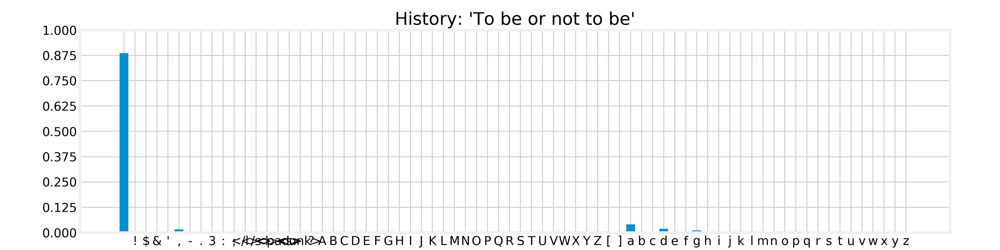
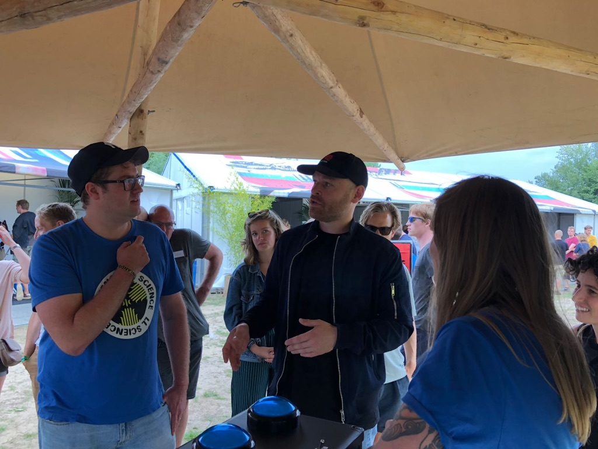

Experimental Adventures with Neural Text Generation
Enrique Manjavacas
1 Introduction
Who are we?
- Folgert Karsdorp (Meertens Institute)
- Mike Kestemont (University of Antwerp)
- Enrique Manjavacas (University of Antwerp)
Why am I here?
I am a PhD student on the field of Natural Language Processing (NLP)
Some projects in which I was involved have attracted some attention…
AsiBot (Nederland Leest 2017; CPNB)

Text Generation
Talk Content
- Language Modeling: Algorithm behind current renewed interest in Text Generation
- Human in the loop: Learning from Human-Machine Interactions
- AsiBot: Writing SciFi in a co-creative interface
- DeepFlow: How do humans perceive authenticity?
2 Language Modeling
- Classic Natural Language Processing (NLP) problem
- Shows up in many applications (at least since the 80s):
- Machine Translation
- Speech Recognition
- Spelling Normalization
- …
Intuition
- We want a model that assigns high probability to plausible sentences like:
- “The cat sat on the mat.”
- “Pierre Vinken, 61 years old, will join the board as a non-executive director.”
- … and low probability to unlikely sentences like:
- “cat on mat The the sat”
- “Colorless green ideas sleep furiously”
Formalism
Probability of a sentence based on the chain-rule
\(P(The, cat, sat, on, the, mat, .)\) =
\(P(The | \text{<}start\text{>})\)
* \(P(cat | \text{<}start\text{>} , The)\)
* \(\ldots\)
* \(P(. | \text{<}start\text{>} , \ldots , mat)\)
Estimating the probability of a sentence
⟹ simplifies to ⟹
Estimating the probability distribution of the next word
Text Generation
How do we use a Language Model to generate text?
Sampling from the distribution


Temperature
A modification of the original distribution (flattening/skewing)
Temperature
- Trade-off between model certainty and unexpected outcome
- Enhancing model certainty leads to boring generations
Temperature
- Trade-off between model certainty and unexpected outcome
- Enhancing model certainty leads to boring generations
- Unexpected outcome might lead to interesting generations…
- … or just junk
Other tricks
- Enforcing topic coherence through interpolation
- Enforcing formal structure (e.g. verse meter, rhyme)
Implementation
Train a model on a sample of sentences to predict the next word given the history
The cat sat on the …?
Markov chain (aka N-Gram Language Model)
- Count the number of times “the cat sat on the” occurs together with “mat”
- Limit the history to the previous “n” words (or characters)
Recurrent Neural Network (RNN)

Scale-up
It turns out that RNNs become better the bigger the dataset
Scaled-up Language Model: OpenAI’s GPT-2 trained on 40GB
40GB is about 12,000 times Tolstoy’s “War and Peace”
In comparison DeepFlow used 165MB
- GPT-2 lead to increase in performance in downstream tasks
- GPT-2 lead to increased sample realism of generated text
Limitations
- Increased realism but lacking “unified world model”
- Good at capturing surface-level correlations
- Unsuccessfully reflecting the underlying logic
Are increasingly bigger Language Models increasingly creative?
- ✔ Progress by a Turing-esque notion of creativity in terms of imitation
- ✗ Approach rules out H-creativity; P-creativity can only be enforced at risk: temperature
- ✗ Lack of an ability to judge the value of its own output (cherry-picked examples)
- Still, increased realism allows us to explore certain type of questions
3 Human in the loop
Asibot
Ability of a Language Model to creatively assist a writer
Context
- CPNB request to participate in 2017 edition of “Nederland Leest”
- Design a co-creative writing environment
- Experiment with author Ronald Giphart who set to add a 10th story to Asimov’s “I, Robot”
Still online (in Dutch): https://asibot.nl/
Co-creativity
- Collaborative creative process involving multiple agents (including computers)
- Four distinct roles for computational systems can be identified (Lubart, 2005):
- Computer as nanny, penpal, coach or colleague
- Computer as pen-pal
- A subordinate agent, that eases the objective of the user
- Computer as colleague
- An agent that challenges the user in a meaningful way
- A verifiable contribution to the end product
Creative usage of the interface
R. Giphart’s 10th story written in collaboration with AsiBot https://asibot.nl/giphart
DeepFlow
- Learn about the characteristics of generated and authentic Hip-Hop
- Learn about how people perceived both authentic and generated Hip-Hop
Focus on Hip-Hop
- Popular genre
- Familiar topics and style
- Loose but existing formal constraints (rhyme & verse length)
- Relatively easy to fake
Setup
- “Bot or not” game
- Two types of questions
Statistics
- 3 days during LOWLANDS2018
- 701 participants
- 12,653 authenticity judgments
- 6,381 generated vs 6,272 authentic
Illustrious Participants
What do we learn from the data?
Detection of generated Hip-Hop
Does modeling-level matter?
Conditioning
Does conditioning matter?
Human Perception Biases
What makes text authentic?
Examine the correlation of linguistic properties and the text source:
- Prosodic: rhyme, alliteration
- Lexical: vocabulary diversity, word complexity
- Syntactic: sentence complexity, sentence length
What makes text authentic vs be perceived as authentic
4 Conclusions
- Improved realism lets us experiment with (co-)creative processes
- … explore perception and characterization of authenticity
- … does not imply increasingly creative agents
- … but doesn’t exclude it either (further work)